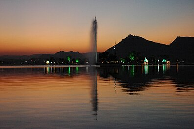

City Palace
The City Palace is an architectural marvel overlooking Lake Pichola.
Learn more about City Palace →
Lake Palace
Located on an island in Lake Pichola, the Lake Palace is built entirely of white marble.
Learn more about Lake Palace →
Jag Mandir
Jag Mandir is famous for its intricate carvings and lush gardens.
Learn more about Jag Mandir →
Bagore Ki Haveli
A historic haveli showcasing Rajasthani art, costumes, and royal artifacts.
Learn more about Bagore Ki Haveli →
Saheliyon Ki Bari
A beautiful garden built for royal ladies, adorned with fountains and marble pavilions.
Learn more about Saheliyon Ki Bari →
Eklingji Temple
The ancient temple is dedicated to Lord Shiva, and is an important Shiva pilgrim spot in the country.
Learn more about Eklingji Temple →
HaldiGhati
The “Valley of the Turmeric”, the beauty of the pass indeed derives from the striking yellow cliff sides that rise on either side of it.
Learn more about HaldiGhati →

Fateh Sagar
An artificial lake named after Maharana Fateh Singh of Udaipur and Mewar.
Learn more about Fateh Sagar →